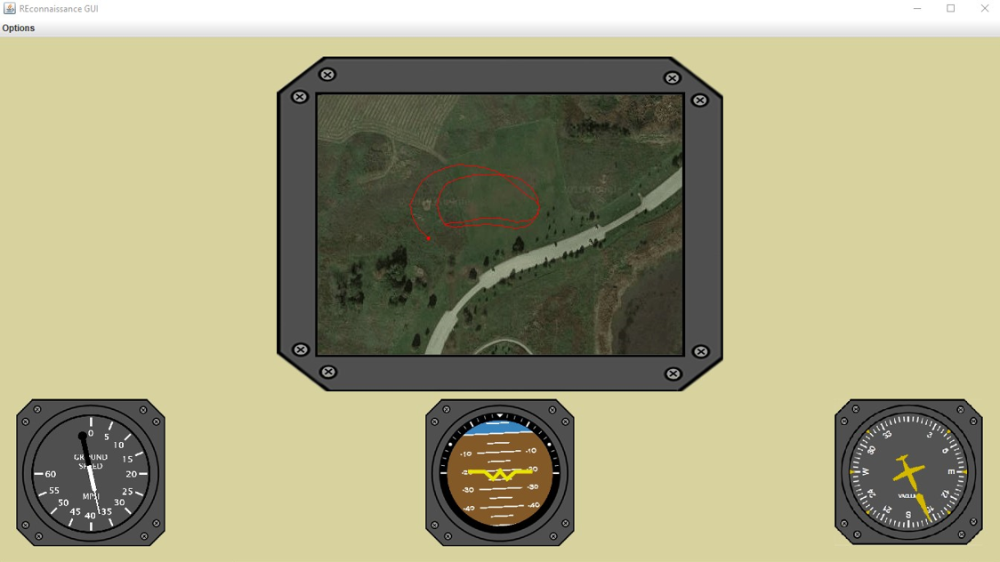

REconnaissance Aircraft
A R(emote) E(xpendable) -connaissance Aircraft.
Background
In my senior year of high school, I was a mentee in Northrop Grumman’s HIP program. In this second and final year of the program, I submitted a project proposal for an low-cost reconnaissance aircraft, able to snap pictures and fly autonomously (stretch goal). In the end, I built the aircraft, created a system of sensors and controllers, and developed a GUI to display streamed sensor data.
Aircraft Build
The overall design of the aircraft was sourced from Flite Test. I changed the power system used, opting to use one powerful motor, as opposed to 2 less powerful motors.
The aircraft plans were first printed, taped together, and then traced onto foam boards.

The parts were then cut out of the foamboard.

The parts were then assembled to create the finished airframe.
Here is a closer look at the power “pod” that I created to house the brushless motor, battery, RC reciever, and ESC (Electronic Speed Control). Once everything was assembled, the plane was test flown for the first time!

After a successful maiden flight, the aircraft got a paint job!

Onboard Electronics
The sensors onboard the aircraft were meant to serve three purposes:
- Monitor the aircraft orientation and position (telemetry)
- GPS Sensor
- Gyroscope
- Stream aircraft telemetry data to ground
- Xbee transmitter
- Photograph the ground
- Raspberry Pi Camera
The sensors, along with a Raspberry Pi and Arduino MEGA were mounted to an acrylic board, which was then mounted to the airframe.

GUI
In order to ease the interpretation of telemetry streamed from the aircraft, I developed a GUI which ran on a groundstation (laptop with an Xbee reciever). The gauges are meant to roughly mimic real aircraft gauges and indicate:
- Attitude
- Groundspeed
- Heading
- Position (via map)

System Demonstration
Here is a video of the full system at work. Pictured are the aircraft flying, along with the streamed data in the GUI. The attitude indicator is shakey due the gyroscope’s position on the acrylic board (far from stable mounting points, in an area with high vibration).